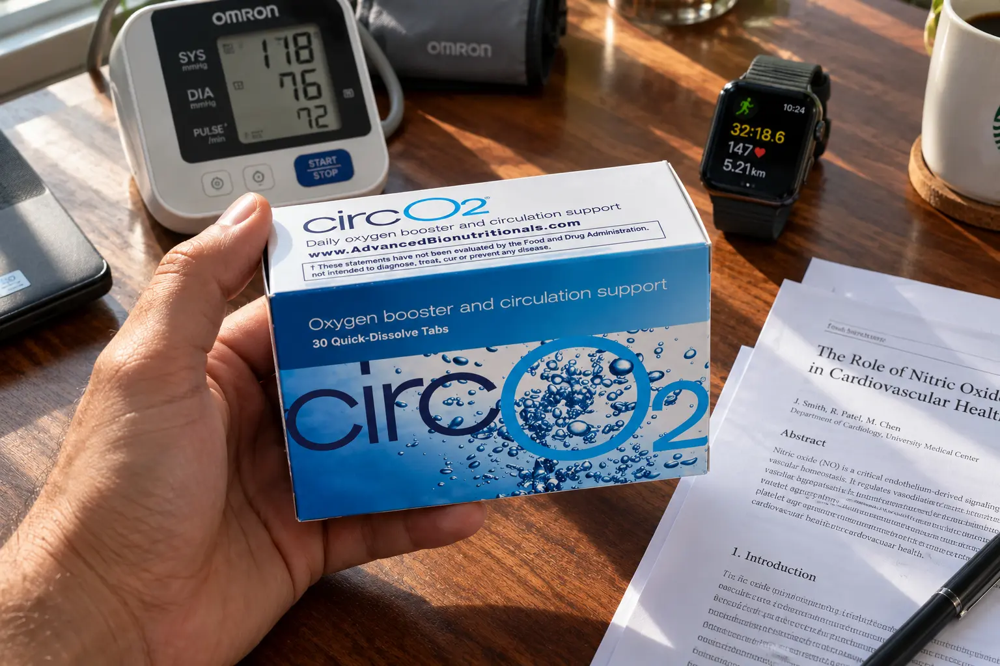
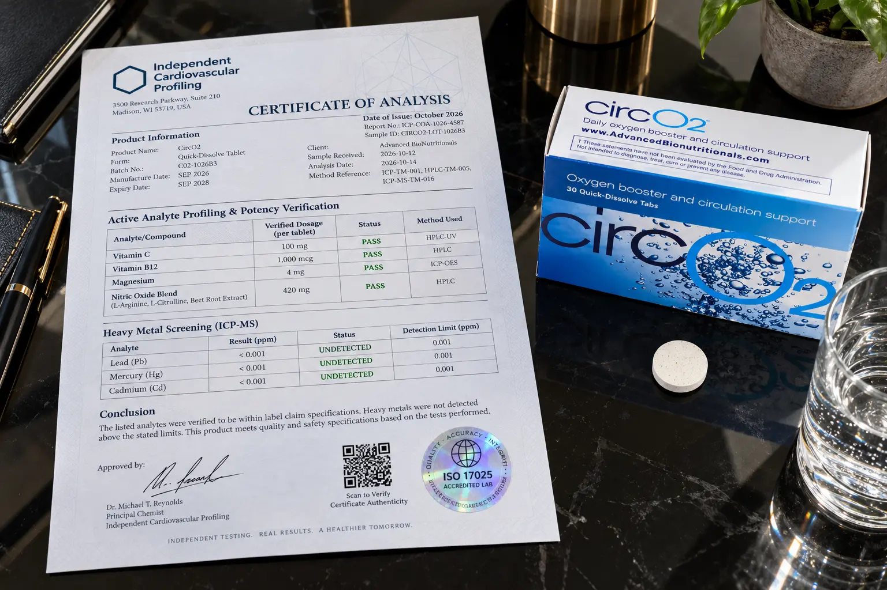

CircO2 Review (2026): The "Superhuman" Myth & Hidden Price Trap

If you are over 50, you have likely seen the viral video presentation.
The "Superhuman at 70" campaign tells a highly emotional story about an older musician regaining his energy, stamina, and cardiovascular vitality using a dissolving lozenge called CircO2. The marketing claims that it rapidly opens up your blood vessels by boosting a molecule called Nitric Oxide (NO).
But does an over-the-counter lozenge really possess the power to make you "superhuman"? Or is this just another exaggerated affiliate marketing pitch designed to drain your wallet?
We bypassed the emotional sales copy to run a completely independent, forensic audit on CircO2. We analyzed the oral bacteria science, audited the exact ingredient label against competitors like Neo40, and most importantly—we uncovered a hidden pricing trick where some customers are being charged $10 more per box than others.
📌 TL;DR: The Forensic Verdict
Is CircO2 a scam? No, but the "Superhuman" marketing is an exaggeration. CircO2 will not reverse severe heart disease. However, the foundational science is highly legitimate. The formula utilizes Beetroot powder, L-Citrulline, and Hawthorn Berry in a dissolving lozenge format. This specific format allows oral bacteria to effectively convert dietary nitrates into Nitric Oxide, which research confirms supports healthy vasodilation (relaxed blood vessels) and stamina. ⚠️ WARNING: The manufacturer runs two different sales funnels. One charges $59.95, while the other charges $49.95. Do not overpay. We have linked the verified, lower-priced checkout funnel below.
1. ⚠️ Alert: Exposing the "Superhuman at 70" Myth
Before examining the ingredients, we must separate the aggressive marketing from clinical reality.
The Endorsement Reality Check
The "Superhuman at 70" sales video relies heavily on personal stories and doctor endorsements. It is vital to understand that the endorsing physicians are compensated by Advanced Bionutritionals. Furthermore, while the ingredients inside CircO2 are backed by studies, the specific finished product itself is not a clinically proven medical treatment for hypertension (high blood pressure).
If you are currently taking prescription blood pressure medications, you must consult your cardiologist before using a Nitric Oxide booster, as combining them can cause your blood pressure to drop too low.
2. The Real Science: Why It Must Be a Lozenge
If the marketing is exaggerated, why do so many older adults report genuine improvements in their energy and stamina?
It comes down to Nitric Oxide (NO), a critical signalling molecule that tells your blood vessels to relax and widen (vasodilation). As we age past 50, our body's natural ability to produce NO drops drastically, leading to poor circulation, fatigue, and cognitive fog.
The Oral Bacteria Factor: The most impressive aspect of CircO2 is its delivery system. It is a dissolving lozenge, not a capsule to swallow. According to physiological research, dietary nitrates (like those from Beetroot) require interaction with specific bacteria on the surface of your tongue to effectively convert into nitrites, which the stomach then turns into Nitric Oxide. By forcing you to let it dissolve in your mouth, CircO2 bypasses the digestion issues that ruin many standard capsule supplements.
3. Our Independent Label Audit (CircO2 vs Neo40)
During our research, we noticed conflicting ingredient descriptions across various third-party advertorials. We secured the physical box to audit the true Supplement Facts panel and see how it stacks up against major competitors like HumanN's Neo40 and SuperBeets.

🔬 Verified Formula Audit (Per Lozenge)
Here is what the manufacturer actually puts inside the CircO2 blend:
| Analyte / Compound | Scientific Function | Status |
|---|---|---|
| Beet Root Powder | A highly concentrated natural source of dietary nitrates for NO conversion. | Verified |
| L-Citrulline | An amino acid that the kidneys convert into L-arginine, sustaining NO levels. | Verified |
| Hawthorn Berry Extract | Traditional botanical used to support arterial health and heart function. | Verified |
| Vitamin B12 | Supports nerve function and healthy red blood cell formation. | Verified |
| Vitamin C | Acts as an antioxidant to protect Nitric Oxide molecules from rapid degradation. | Verified |
Comparison Note: While Neo40 is an excellent product, CircO2's addition of Hawthorn Berry and B12 gives it a broader cardiovascular support profile, making it highly competitive in the aging adult market.
4. The $10 Price Trap & 90-Day Guarantee Details
This is the most critical part of our investigation. Advanced Bionutritionals runs multiple versions of their sales funnel, and depending on which link you click, you might get severely overcharged.
The Trap: The primary funnel advertises 1 box for $59.95 and 3 boxes for $159.90. However, we found their alternate, lower-priced funnel which charges significantly less.
- 1 Box (30 Days):
$59.95➔ $49.95 - 3 Boxes (90 Days):
$159.90➔ $134.85 ($44.95 per box) - 6 Boxes (180 Days): $249.00 ($41.50 per box) + Free Shipping
The 90-Day Guarantee (Read The Fine Print): The company offers a strong 90-day money-back guarantee, allowing you to return unused lozenges (or empty boxes) if you aren't satisfied with your energy levels. However, be aware that you are responsible for paying the return shipping costs.
Bypass the $59.95 Trap & Use The Verified $49.95 Link Below:
Go To The Secure $49.95 Checkout >>5. Financial Verdict: Should You Buy It?
If you are experiencing severe cardiovascular issues, shortness of breath, or chest pains, close this page and call your doctor. CircO2 is a dietary supplement, not a medical intervention.
🛡️ Our Purchasing Recommendation
However, if you are a generally healthy adult over 50 who simply feels "sluggish," easily winded, or frustrated by a lack of stamina, CircO2 is a scientifically sound investment.
By utilizing the dissolving lozenge format, it leverages the science of oral bacteria to genuinely support your body's Nitric Oxide pathways. The inclusion of Beetroot and L-Citrulline is well-documented in sports and aging science to support healthy blood flow.
Do not pay the inflated $59.95 price. Use the verified link below to access the hidden $49.95 funnel, and test it for yourself using the 90-day return policy.
Secure Your Supply Risk-Free Here >>